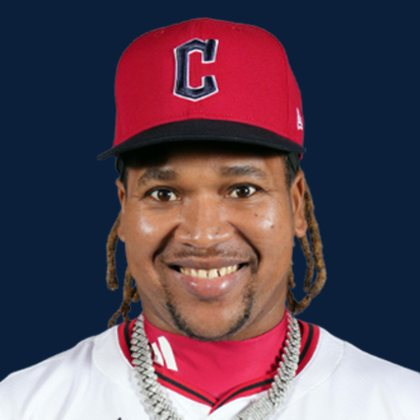

BASE KEEP
The Keep · The Diamond
Player File · 3B CLE

José Ramírez
#11 · 3B · Cleveland Guardians · age 33 · B/T SR · 5' 8" / 190 lbs · MLB debut 2013 · Bani, Dominican Republic
Keep avg18.26
# Boards23
BK Value5,534
Spread5–41
Hitting
| Year | G | AB | R | H | 2B | HR | RBI | SB | BB | SO | AVG | OBP | SLG | OPS |
|---|---|---|---|---|---|---|---|---|---|---|---|---|---|---|
| 2026 | 94 | 344 | 56 | 82 | 20 | 10 | 38 | 29 | 54 | 50 | .238 | .341 | .384 | .725 |
| 2025 | 158 | 593 | 103 | 168 | 34 | 30 | 85 | 44 | 66 | 74 | .283 | .360 | .503 | .863 |
The 2026 line
Keep #17 · avg 18.26 · 23 boards · .238 / 10 HR / 29 SB / .725 OPS
Baseball Savant
Starcast · spray · pitch
Percentile ranks (Starcast) plus the official Savant spray chart for bats and pitch chart for arms. Open the full Baseball Savant page.
Batter · 2026
xwOBA
85
xBA
93
xSLG
65
xISO
42
xOBP
97
Barrels
27
Barrel %
25
EV
52
Max EV
71
Hard Hit %
56
K %
93
BB %
92
Whiff %
90
Chase %
54
Speed
58
Arm
36
OAA
82
Bat Speed
23
Squared Up
74
Swing Len
41
Hits spray chart
Minus
- Age 33 — dynasty tax.
Board graph
Spread 5–41 · 23 sources
Every Board
Spread 5–41 · 23 sources
| Source | Rank |
|---|---|
| TDG Points | 5 |
| RotoWire | 11 |
| FanGraphs The Board | 11 |
| ESPN | 12 |
| NFBC ADP | 12 |
| Mastersball | 12 |
| Yahoo Fantasy | 12 |
| ATC ROS | 12 |
| Dynasty League Baseball | 14 |
| Four-Seam Fantasy | 14 |
| Fantasy Baseballers | 15 |
| CBS Sports | 17 |
| Ottoneu | 17 |
| FantasyPros Dynasty ECR | 19 |
| Baseball Prospectus | 21 |
| The Dynasty Dugout | 21 |
| Baseball America | 21 |
| MLB Pipeline mix | 21 |
| Pitcher List | 22 |
| The Athletic | 24 |
| Razzball | 33 |
| Enos Slaughter | 33 |
| RotoGraphs Model | 41 |
BK News
- Today's Best MLB Home Run Prop Bets: Top 5 Predictions ft. Matt Olson, Pete Crow-Armstrong | August 17, 2026
- N&N: Steven Kwan 5-hit performance spurs comeback
- José Ramírez OUT FOR WEEKS | Fantasy Baseball Trade Targets + Injury Replacements (2026) Action Collective (QqwqeoR6P1)
On The Keep nearby — Kevin McGonigle (#15) · Cristopher Sánchez (#16) · Garrett Crochet (#18) · Julio Rodríguez (#19)
All players · The Keep · The Diamond · BK News · The Lineup · Pitchers · Calculator